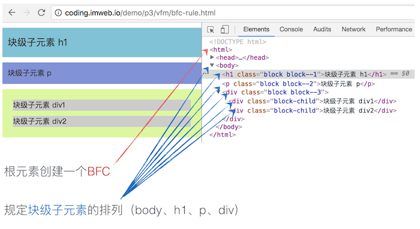

格式化上下文
默认情况下，盒子按照元素在 HTML 中的先后位置从左至右自上而下一个接着一个排列摆放。如下图：

在图中我们可以看到，有些元素的盒子被渲染为完整的一行，如h1、p、div；而有些元素的盒子则被渲染为水平排列，直到该行被占满然后换行，如span、a、strong。
这是因为不同的盒子使用的是不同的格式化上下文（formatting context）来布局，每个格式化上下文都拥有一套不同的渲染规则，它决定了其子元素将如何定位，以及和其他元素的关系和相互作用。就如使用不同的容器来装水一样，呈现出来的形态也将不一样。
最基本的两个格式化上下文分别为：块格式化上下文（block formatting context 简称 BFC）和行内格式化上下文（inline formatting context 简称 IFC）
BFC
默认根元素（html 元素）会创建一个 BFC，除此以外，下面的任何一个条件都可以创建一个新的 BFC。
- 浮动元素 (元素的 float 不是 none)
- 绝对定位元素 (元素具有 position 为 absolute 或 fixed)
- 内联块 (元素具有 display: inline-block)
- 表格单元格 (元素具有 display: table-cell，HTML表格单元格默认属性)
- 表格标题 (元素具有 display: table-caption, HTML表格标题默认属性)
- 具有overflow 且值不是 visible 的块元素，
- display: flow-root
- column-span: all 应当总是会创建一个新的格式化上下文，即便具有 column-span: all 的元素并不被包裹在一个多列容器中。
- flex item 和 grid item
BFC 规定的是其块级子元素的排列方式，而不是创建 BFC 的元素本身。如下图：

在一个 BFC 中，其块级盒子元素将会按照如下规则进行渲染：
- 块级盒会在垂直方向，一个接一个地放置，每个盒子水平占满整个容器空间；
- 块级盒的垂直方向距离由上下 margin 决定，同属于一个 BFC 中的两个或以上块级盒的相接的 margin 会发生重叠；
- BFC 就是页面上的一个隔离的独立容器，容器里面的子元素不会影响到外面的元素。反之也如此；
- 计算 BFC 的高度时，浮动元素也参与计算。
具体渲染效果可参看 DEMO：块格式化上下文
IFC
当块容器盒（block container box）不包括任何块级盒（block-level boxes）时，就会创建一个行内格式化上下文（IFC）。
IFC 规定的是行内级子元素的排列方式，其渲染规则比较多，这里把几个重要点简单罗列如下：
- 盒子一个接一个的在水平方向摆放，当容器宽度不够时就会换行；
- 每一行将生成一个匿名行盒（line box），包括该行的所有行内级盒；
- 水平方向上，当所有盒的总宽度小于匿名行盒的宽度时，那么水平方向排版由
text-align属性来决定； - 垂直方向上，行内级盒的对齐方式由
vertical-align控制，默认对齐为baseline； - 行盒的高度由内部子元素中实际高度最高的盒子计算出来，值得注意的是，行内盒（inline boxes）的垂直的
border，padding与margin都不会撑开行盒的高度。
注：在 IFC 的环境中，是不能存在块级元素的，如果将块级元素插入到 IFC 中，那么此 IFC 将会被破坏掉变成 BFC，而块级元素前的元素或文本和块级元素后的元素或文本将会各自自动产生一个匿名块盒其包围，这在前面匿名块盒的时候已经讨论了。
具体行盒高度及垂直对齐方式渲染效果可参看：
其他格式化上下文
除此之外，还有一些其他格式化上下文，如 table formatting context（table 布局）、flex formatting context（flexbox 布局）、grid formatting context（grid 布局），这些我们将在随后的课程中继续深入。